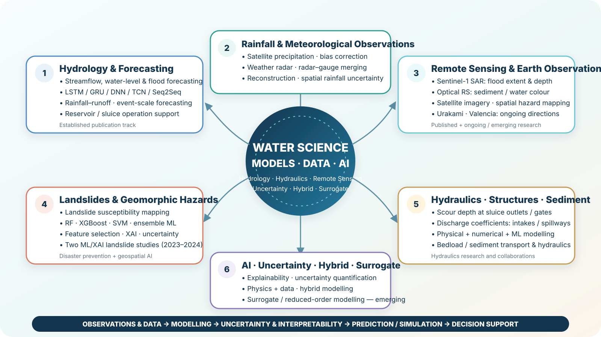
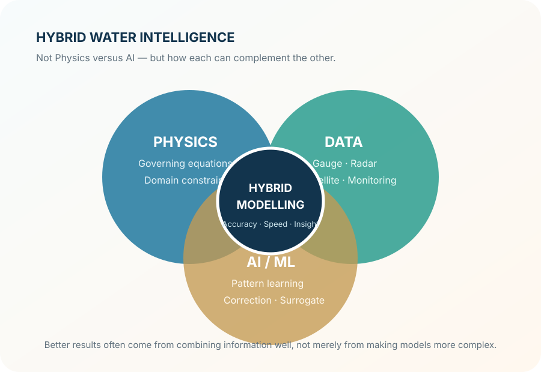
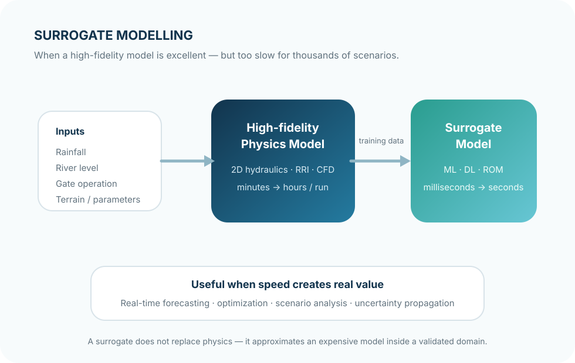

01 · HYDROLOGY
Hydrological forecasting
Streamflow, water-level and flood forecasting, event-scale prediction, rainfall–runoff modelling, and operation-related problems.
Hydrology · Hydraulics · Remote Sensing · Artificial Intelligence
Water science through models, data, and AI
Lecturer · Faculty of Water Resources Engineering · Thuyloi University
Research focuses on the intersection of hydrology, hydraulics, remote sensing, and data science. The aim is not only to improve predictive accuracy, but also to understand why a model works, where it may fail, and whether the result remains useful for real water problems.
Research overview
From rainfall and streamflow observations to hydro-hydraulic models, Earth observation, AI, and uncertainty. Some themes have an established publication track; others, including optical remote sensing for sediment and surrogate modelling, are still developing.

About
Currently based at the Faculty of Water Resources Engineering, Thuyloi University. Earlier stages included Ph.D. and postdoctoral research at Kyungpook National University in South Korea, followed by a research appointment at Chuo University in Japan.
The topics have evolved, but the thread is consistent: streamflow and water-level forecasting, satellite and radar rainfall, flood inundation, Sentinel-1 SAR, landslides, hydraulic structures, uncertainty/XAI, and more recently physics–data integration.
Getting a model to run is only the beginning. More difficult questions concern input quality, sources of uncertainty, sensitivity to assumptions, and whether a method remains reliable when transferred to another basin or operating condition.
Main themes
Streamflow, water-level and flood forecasting, event-scale prediction, rainfall–runoff modelling, and operation-related problems.
Satellite precipitation, bias correction, radar–gauge merging, Sentinel-1 SAR, and emerging optical remote sensing work for sediment and water colour.
Rainfall–runoff–inundation, DEM/topographic uncertainty, flood extent/depth, and spatial sensitivity of flood simulations.
Applied hydraulics, flow through structures, hydraulic performance assessment, and combinations of physical, numerical, and machine-learning models.
From machine-learning susceptibility mapping to feature selection, explainable AI, and uncertainty analysis.
Deep learning, ensembles, uncertainty quantification, physics–data integration, and surrogate/reduced-order models for expensive simulations.
Research stories
Not paper abstracts, but questions that often lead back to the data, the model, or the evaluation framework.

Station metrics may improve while the spatial pattern is still wrong. For hydrological applications, that difference can matter more than how smooth the map looks.
Related paper ↗
Hybrid modelling keeps what is known about the physical system, then lets data help where the physics is incomplete or expensive to represent.

Speed matters only when the valid domain, approximation error, and uncertainty are clear.
Recognition
Each reflects a different stage and direction in the research trajectory.
A widely cited paper in the research trajectory and listed by Water among its most-cited papers.
Research period at the Real-time Flood Prediction R&D Unit, Research and Development Initiative.
Publications
A short representative list across major research directions; the complete record is maintained on Google Scholar.
Xuan-Hien Le, Naoki Koyama, Tadashi Yamada · Journal of Hydrology.
DOI ↗Xuan-Hien Le et al. · Remote Sensing.
DOI ↗Xuan-Hien Le et al. · Water.
DOI ↗Xuan-Hien Le et al. · Frontiers in Environmental Science.
DOI ↗Xuan-Hien Le et al. · Remote Sensing.
DOI ↗Xuan-Hien Le et al. · Water.
DOI ↗Guest Editor
Editorial work also provides a wider view of emerging directions across hydrology, water resources, remote sensing, and data-driven methods.
Research notes
Short practical notes for keeping model performance, data quality, and uncertainty in perspective.
A strong NSE does not guarantee that peak flow, timing, and bias are all acceptable.
Changing rainfall products, DEMs, or preprocessing can alter results more than changing from model A to model B.
Speed is useful only when extrapolation, approximation error, and uncertainty are clearly understood.
Contact
Research overlap in hydrology, hydraulics, floods, remote sensing, uncertainty, or AI for water science is always a good starting point for discussion and collaboration.